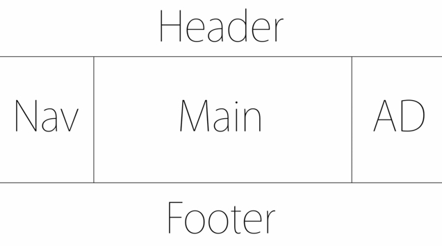
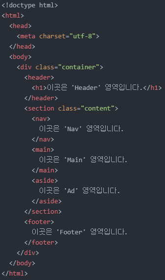
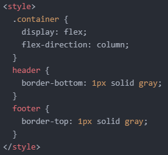
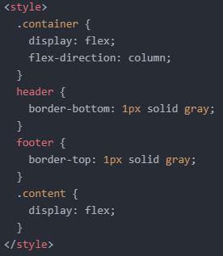
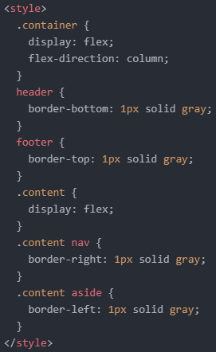
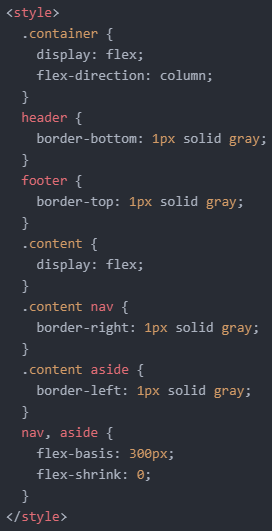
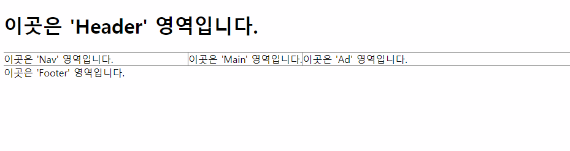

- Flex에 대해 알아보기 3
오늘도 'flex'에 대해서 알아보겠습니다.
혹시 'Holy Grail'이라는 단어를 아시나요?
바로 '성배'라는 뜻입니다.
그리고 'Holy Grail layout(성배 레이아웃)'이라고 불리는 레이아웃이 있습니다.
바로 위와 같은 레이아웃인데요, 화면이 작아짐에 따라 'Main' 영역이 같이 작아지는 레이아웃을 말합니다.
사람들이 이 레이아웃을 만들기 위해 노력했지만 완벽한 방법을 찾지 못했다고 합니다.
마치 과거 사람들이 성배를 찾기 위해 노력했지만 결국 찾지 못했던 것과 유사하다 하여 이 레이아웃을 'Holy Grail layout(성배 레이아웃)'이라고 부르는 것입니다.
그런데! 'flex'를 이용하면 이 레이아웃을 간편하게 만들 수 있습니다.
'flex'는 아주 대단한 도구인 셈이죠.
그럼, 'flex'를 이용해 성배 레이아웃을 만들어보겠습니다.
혹시 위 레이아웃을 봤을 때 'Header', 'Nav', 'Main', 'AD', 'Footer' 단어들을 보고 뭔가 떠오르는 것이 있었나요?
저는 'Header'와 'Footer'를 보자마자 딱 떠오르는 것이 있었습니다.
바로 '의미론적 태그'입니다.
약 한 달 전쯤에 공부했었던 건데 기억이 안 나시면 잠깐 보고 와주세요. (클릭!)
다 보셨으면 다음과 같이 코드를 작성해 주세요.
'Nav', 'Main', 'AD' 영역의 구획을 나누고 이들을 하나로 취급해야 하므로 'section' 태그를 사용했습니다.
그럼 위 레이아웃을 'flex'를 이용하여 성배 레이아웃으로 바꿔보겠습니다.
가장 먼저, 'flex'를 선언해 줍니다.
그럼 다음과 같이 하나의 행으로 정렬됩니다.
flex의 기본 설정값은 'flex-direction: row'와 같으니까요.
하지만 우리는 하나의 'header', 'section', 'footer' 세 요소가 하나의 열로 정렬되어야 하므로, 'flex-direction: column'으로 바꿔줍니다.
다음과 같이 말이죠
그리고 각 구역을 구분하기 위해 다음과 같이 경계선을 넣어줍니다.
'Header', 'Footer' 영역은 성배 레이아웃에 맞게 배치되었고, 이제 'Nav', 'Main', 'AD' 영역만 나눠주면 됩니다.
어떻게 해야 할지 감이 오시나요?
바로 세 영역의 부모에 해당하는 'class=content'인 요소에 flex를 선언해 주면 됩니다.
다음과 같이 말이죠.
역시 경계선을 넣어 영역을 구분해 줍니다.
점점 목표에 도달하고 있습니다.
조금 전에 성배 레이아웃은 화면의 크기가 작아질 때 'Main' 영역도 같이 작아진다고 했습니다.
즉, 'Nav', 'Ad' 영역은 고정되어 있고, 'Main' 영역만 유동적인 상태로 만들어주면 됩니다.
이때 필요한 것이 바로 어제 배웠던 'flex-shrink' 속성입니다.
우선 다음과 같이 'Nav', 'Ad' 영역의 크기를 지정해 준 다음 'flex-shrink: 0;'을 선언해 줍니다.
'Ad' 영역의 크기를 'Nav' 영역과 같이 300px로 지정했음에도 더 길어 보이는 것은 배경 크기를 지정해 주지 않았기 때문입니다.
어쨌든 다음과 같이 화면을 줄여보면 성배 레이아웃이 완성된 것을 알 수 있습니다.
그 다음엔 박스 모델을 이용해 조금 더 예쁘게 다듬어주면 됩니다.
그렇게 완성한 레이아웃은 다음과 같습니다.
오늘은 여기까지 하겠습니다.
그럼 내일도 화이팅!